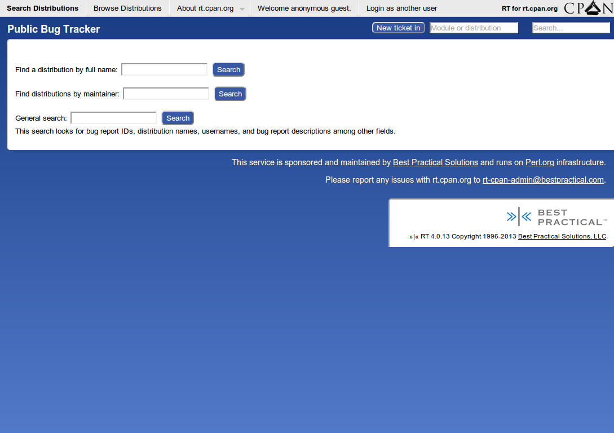

Wrangling rt.cpan.org for your bidding
I'm TSIBLEY@cpan.org and trs on IRC
rt.cpan.org
rt.perl.org
Request Tracker
Best Practical Solutions
I work for BPS
We maintain rt.cpan.org
31,200 queues
10,600 w/ bugs
22,400 active bugs
38,700 inactive bugs
Distribution → Queue
What is a queue?
Basic organizational unit
Access control
Available field values
(Fixed in, Broken In)
People
(CPAN authors)
What is a distribution?
TSIBLEY/App-cpanchanges-20130523.0.tar.gz
TSIBLEY/App-cpanchanges-20130523.0.tar.gz
According to rt.cpan.org
PAUSE lacks concept
(For now! Talk to RJBS or DAGOLDEN)
~2 hour lag
bug-MetaCPAN-API@rt.cpan.org
bug-MetaCPAN-API@rt.cpan.org
bug-libwww-perl@rt.cpan.org
[rt.cpan.org #NNNNN]
[rt.cpan.org #NNNNN]
https://rt.cpan.org
PAUSE authors
Public access,
Bitcard, &
OpenID

Maintainers
Primary maint + Co-maints
you!
Own, resolve, delete tickets, modify queue options
AdminCcs = Maintainers
Ticket people
Owner
Requestors
Ccs
AdminCcs
Maints can add anyone
Add yourself as Requestor, Cc to any bug
Follow progress
(Use address of your current user)
Links between tickets
Depends On
Refers To
Child
Depended On By
Referred To By
Parent
Parent / Child
MemberOf / Member
Dependencies are enforced
Ticket numbers
perl:NNNN → rt.perl.org
http:// https://
Fully searchable
Searching
“Simple” search
Ever present
Terse, powerful
Saves you time
Jumping off point
Ticket #
Dist name → bug list
PAUSE id → dist list
Examples!
Moose
q:Moose
queue:Moose
"Moose"
Moose any
Moose resolved
Moose method
tsibley
owner:tsibley
tsibley@cpan.org
Browser site search
https://rt.cpan.org/Search/Simple.html?q=%s
Query builder
Ordering and formatting
Builds TicketSQL
TicketSQL?
SQL-like language
A big WHERE clause
Abstracts away joins
Same basic operators
Booleans and parentheticals
“Advanced”
Watcher.id = '__CurrentUser__'
QueueAdminCc.id = '__CurrentUser__'
'CF.{Fixed in}' >= '2.00' Indexed FTS to come
Formats
Saved searches
Query, Order, Format
Save/Load via Query builder
Charting
GROUP BY
Any search
Save/Load
Let's chart ‘"hash randomisation" any’ by Status
Your RT homepage
“RT at a glance”
Modify portlets
Saved searches
Saved charts
Dashboards
Infinite homepages!
Subscribe via email
RSS feeds
Command line access
rt ls "Queue='Moose' and Status='new'"
rt correspond 12345 \
-m 'Patch attached' \
-a 0001-Frobble-the-whatzits.patch
rt edit 12345 set status=patched
Powerful aliases
Great for scripting
Automatically delete tickets in your Spam folder
Easy multiple RT support
$ ls -1 ~/bin/*-rt
~/bin/invoke-rt
~/bin/bps-rt@
~/bin/cpan-rt@
~/bin/issues-rt@
~/bin/local-rt@
~/bin/perl-rt@
$ ls -1 ~/.rtrc-*
~/.rtrc@
~/.rtrc-bps
~/.rtrc-cpan
~/.rtrc-issues
~/.rtrc-local
~/.rtrc-perl
#!/bin/bash
# invoke-rt
config=~/.rtrc-`basename ${0%-rt}`
exec env RTCONFIG="$config" rt "$@" Web API
“REST”
Not really REST
Used by the CLI
RTDEBUG=3 to trace
cpanm RT::Client::REST
perldoc RT::Client::REST
PAUSE only
“Manage”
Notify additional addresses
Your mailing list
Another bug tracker
(Avoid mail loops)
Custom subject tag
[rt.cpan.org #12345]
[rt.cpan.org Moose #12345]
Be reasonable
Distribution notes
Bug lists & Report a bug
“I don't use RT”
Tell the world!
META.{json,yaml}
(CPAN::Meta::Spec)
ExtUtils::MakeMaker
META_MERGE => {
resources => {
bugtracker => "…",
},
}META_MERGE => {
"meta-spec" => { version => 2 },
resources => {
bugtracker => {
web => "…",
mailto => "…",
},
},
} Module::Build
meta_merge => {
resources => {
bugtracker => "…",
},
}, Module::Build::Functions
Module::Install
resources bugtracker => "…";
Dist::Zilla
bugtracker.web = …
bugtracker.mailto = …
metacpan.org
search.cpan.org
rt.cpan.org
Thanks to Ian Norton & Shadowcat Systems
Queue still exists‽
Yes.
Advisory only
rt.cpan.org is for
authors
and
users
Abandoned modules
Community patches
Past bug history
“Someone else has this problem, I'm not crazy.”
Exported data
Bug counts by status
distribution name
new
open
stalled
patched
resolved
rejected
active
inactive
[
…, {
"dist" : "Moose",
"counts" : {
"rejected" : 36,
"inactive" : 179,
"resolved" : 143,
"active" : 48,
"deleted" : 85,
"patched" : 0,
"open" : 32,
"stalled" : 5,
"new" : 11
}
}, …
] Bug summaries
sqlite> .s
CREATE TABLE ticket (
id INTEGER NOT NULL PRIMARY KEY,
distribution TEXT NOT NULL,
subject TEXT NOT NULL,
status TEXT NOT NULL,
severity TEXT,
created TEXT NOT NULL,
updated TEXT NOT NULL
); RT help
#rt on irc.perl.org
rt-cpan-admin@bestpractical.com
Questions?